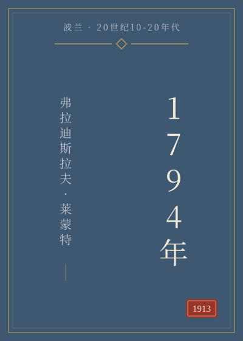
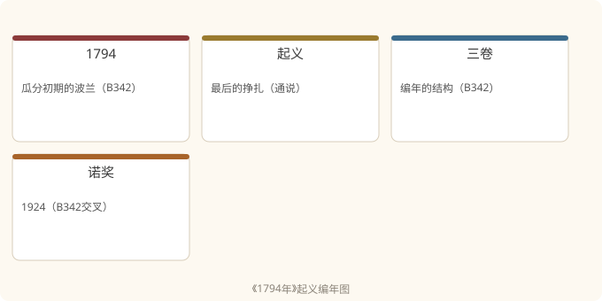

1794年
一、基本信息
| 作者 | 弗拉迪斯拉夫·莱蒙特 |
|---|---|
| 成书/出版 | 1913-18年（Britannica B342：Rok 1794, 3 vol. (1913-18)——'depicts Poland at the start of the partitions in the late 18th century'） Wladyslaw Reymont — Encyclopaedia Britannica（百科全书） |
| 国别/地区 | 波兰 |
| 时代 | 近代 · 20世纪10-20年代 |
| 体裁 | 历史小说（三卷） |
| 语言 | 波兰语 |

《1794年》起义编年图（主题·结构图）
二、创作背景
Britannica（B342）：Rok 1794 三卷（1913-18）——'depicts Poland at the start of the partitions in the late 18th century'（波兰被瓜分初期）。
Britannica（B342）：莱蒙特——1924诺奖。
题材（通说待核）：柯希丘什科起义前夜——1794年的华沙。
三、内容脉络
（通说待核）三卷的起义编年：最后的波兰。
（通说待核）柯希丘什科的'克拉科夫宣誓'（通说待核）。
四、主要人物表
| 人物 | 身份 | 说明 |
|---|---|---|
| 柯希丘什科 | 起义领袖 | （通说待核） |
五、主题与艺术特点
- 瓜分初期的波兰（B342）。
- 起义的编年（书名语境——通说待核）。
- 历史小说的三卷（B342）。
六、影响与评论
- Britannica：Rok 1794 (1913-18)（B342）。
Wladyslaw Reymont — Encyclopaedia Britannica（百科全书） - Britannica：1924诺奖（B342 交叉）。
Wladyslaw Reymont — Encyclopaedia Britannica（百科全书）
七、阅读建议
难点
- 柯希丘什科起义史。
- 三卷的编年。
- 《1794年》中译名（《最后的波兰》）待核。
- 波兰文原版（公有领域）。
莱蒙特历史篇；与《农民》《福地》对读。
八、待核实
- 三卷卷名核对（通说）。
- 1913-18出版细节待核（B342口径）。
- 柯希丘什科细节待核。